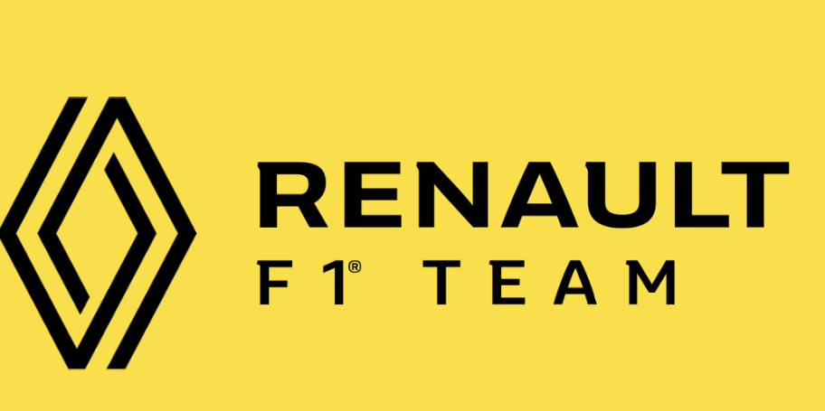
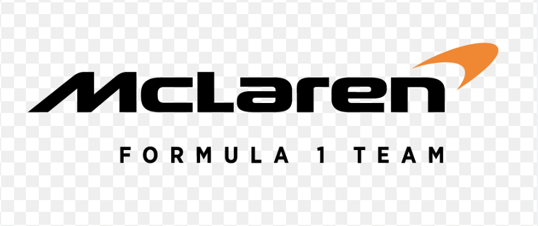
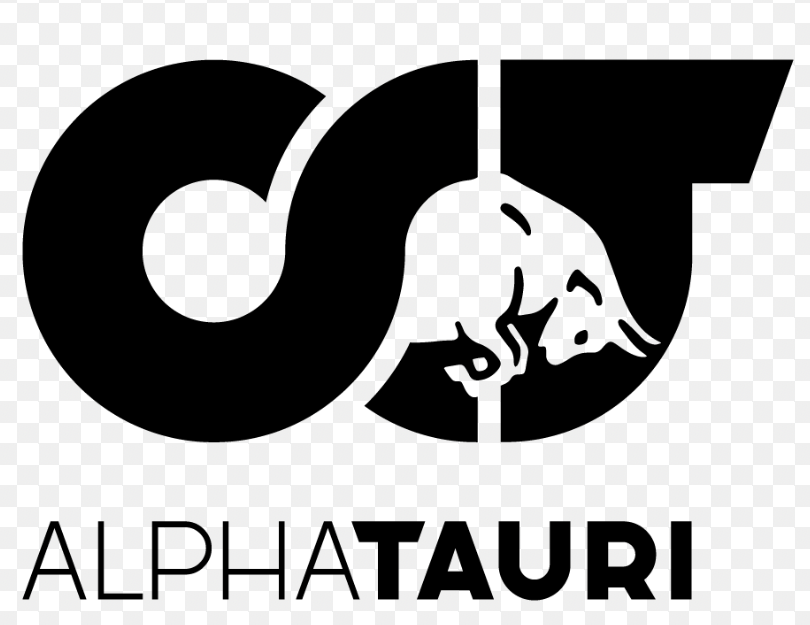
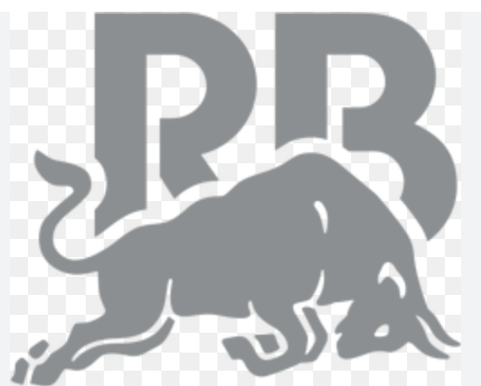

Red Bull
Daniel Ricciardo was first a test driver at Red bull for 2009 to 2011. He then started driving for Red bull from 2014 to 2018. So this means he had 5 seasons. But then re-signed as a reserve driver in 2023. Daniels teammate was Max Verstappen for all of his seasons.
Renault
Daniel was then at Renault for 2 seasons,from 2019 to 2020. He joined the team after Red Bull. During his time at Renault he had 2 teammates Nico Hulkenberg and Esteban Ocon.
McLaren
Daniel the got offered a contract at Mclaren. He was there for 2 seasons, 2021 to 2022. Daniels contract was then terminated a year early because he was under performing. During this his teammate was Lando Norris
Alpha Tauri
He was first at Toro Rosso for 2 seasons in 2012 and 2013. His teamate was Jean-Eric Vergne. When he first raced for this team but came back in 2023. But then this team changed to Alpha Tauri then he replaced Nyck de Vries in 2023. His teammate was Yuki Tsunoda from 2023 to the end.
Racing Bulls
Daniel was with Racing Bulls in 2023. When the team changed from Alpha Tauri he stayed on when they rebranded. But then got replaced by Liam Lawson for the last 6 races of the season. His teammate at that time was Yuki Tsunoda before he got replaced.